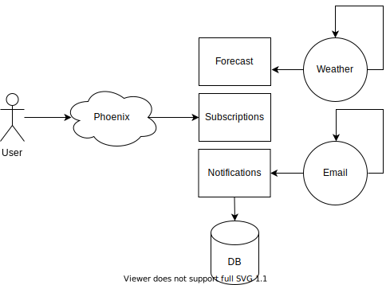

Wind alert application
Last year I started learning kite surfing. In the area where I live we have rather fussy weather. Which means that wind does not not blow with proper speed and direction to fully enjoy this sport. To not miss any day that I can practise I prepared small application which fetches wind forecasts from open meteo and sends me email notification daily.

Main entry point to application is web form where user can register for wind forecast for place that interests him. This is handled by SubscriptionsController which uses Requests.Subscription to to validate user input and only if it is valid it calls Subscriptions module to register user and subscribe to forecast for a given place.
defmodule OrkanWeb.SubscriptionsController do
use OrkanWeb, :controller
alias Orkan.Subscriptions
alias OrkanWeb.Requests.Subscription
def index(conn, _params) do
render(conn, "index.html", changeset: Subscription.changeset(%Subscription{}, %{}))
end
def create(conn, %{"subscription" => subscription_params}) do
changeset = Subscription.changeset(%Subscription{}, subscription_params)
if changeset.valid? do
case Subscriptions.create(changeset.changes) do
{:ok, _} ->
conn
|> put_flash(:info, "Succesfully subscribed.")
|> redirect(to: Routes.subscriptions_path(conn, :index))
{:error, error} ->
conn
|> put_flash(:error, error)
|> render("index.html", changeset: changeset)
end
else
render(conn, "index.html", changeset: %{changeset | action: :insert})
end
end
end
defmodule OrkanWeb.Requests.Subscription do
use Ecto.Schema
import Ecto.Changeset
require Decimal
@fields [:email, :longitude, :latitude, :name]
@mail_regex ~r/^[A-Za-z0-9._%+-]+@[A-Za-z0-9.-]+\.[A-Za-z]{2,4}$/
@primary_key false
embedded_schema do
field :email, :string
field :longitude, :string
field :latitude, :string
field :name, :string
end
def changeset(option, attrs) do
option
|> cast(attrs, @fields)
|> validate_required(@fields)
|> validate_format(:email, @mail_regex)
|> validate_coordinates([:longitude, :latitude])
end
defp validate_coordinates(changeset, fields) do
Enum.reduce(fields, changeset, fn field, changeset ->
field_value = get_change(changeset, field)
if field_value != nil && !valid_coordinate?(field_value) do
add_error(changeset, field, "not valid coordinate")
else
changeset
end
end)
end
defp valid_coordinate?(coordinate) do
case Decimal.parse(coordinate) do
:error ->
false
{coordinate, _} ->
if Decimal.compare(coordinate, 0) == :lt do
false
else
true
end
end
end
end
In the background of our application we have weather and email workers scheduled with quantum library:
config :orkan, Orkan.Scheduler,
jobs: [
{"0 * * * *", {Orkan.Forecasts.Worker, :update_forecasts, []}},
{"0 7 * * *", {Orkan.Notifications.Worker, :send_forecasts, []}}
]
As you can see Weather worker is scheduled to do the work every hour. It fetches data from open meteo and saves it to db. That way we are building our history of weather forecast which we could use in the future.
Notification worker is scheduled to send email notification to all subscribed users every day at 7 in the morning. It gets forecast for each places from db and uses Bambo library to generate and send email to all users subscribed for notifications for given place.
Main Modules
Notifications
This module is responsible for sending emails about wheather conditions. It uses Subscription module to get subscribesr and palces and Mail module to compose and send email.
defmodule Orkan.Notifications do
alias Orkan.Subscriptions
alias Orkan.Forecasts
alias Orkan.Notifications.Mail
def send_forecasts() do
Enum.each(Subscriptions.users(), fn user ->
places = Subscriptions.places(user.id)
forecasts = Forecasts.get(places)
Mail.send(user, forecasts)
end)
end
end
Subscriptions
This module is responsible for creating subscriptions and exposes information about places and users. What is interesting in this code is that we use on_conflict and conflict_target properties when we insert user and place. Reason for that is concurrent request for the same place by different users or for different places for the same user.
defmodule Orkan.Subscriptions do
import Ecto.Query
alias Orkan.Repo
alias Orkan.Subscriptions.Place
alias Orkan.Subscriptions.Subscription
alias Orkan.Subscriptions.User
def places() do
Repo.all(Place)
end
def places(user_id) do
Subscription
|> from(as: :subscription)
|> join(:inner, [subscription: s], assoc(s, :place), as: :place)
|> where([subscription: s], s.user_id == ^user_id)
|> select([place: p], p)
|> Repo.all()
end
def users() do
Repo.all(User)
end
def get(user_id) do
Repo.all(from s in Subscription, where: s.user_id == ^user_id)
end
def create(%{email: email, longitude: longitude, latitude: latitude, name: name}) do
user = get_or_create_user(email)
place = get_or_create_place(longitude, latitude, name)
case Repo.insert(
Subscription.changeset(%Subscription{}, %{
place_id: place.id,
user_id: user.id
})
) do
{:ok, subscription} ->
{:ok, subscription}
{:error, _changeset} ->
{:error, "Already subscribed."}
end
end
defp get_or_create_user(email) do
case Repo.one(from u in User, where: u.email == ^email) do
nil ->
{:ok, user} = Repo.insert(User.changeset(%User{}, %{email: email}), on_conflict: :nothing)
user
user ->
user
end
end
def get_or_create_place(longitude, latitude, name) do
case Repo.one(from p in Place, where: p.longitude == ^longitude and p.latitude == ^latitude) do
nil ->
{:ok, place} =
Repo.insert(
Place.changeset(%Place{}, %{longitude: longitude, latitude: latitude, name: name}),
on_conflict: [set: [name: name]],
conflict_target: [:longitude, :latitude]
)
place
place ->
place
end
end
end
Forecasts
Main responsibility of this module is to update forecasts for given places. In order to to that we get data from open meteo and save it to db. Additionally this module get forcasts for given places.
defmodule Orkan.Forecasts do
import Ecto.Query
alias Orkan.Forecasts.Forecast
alias Orkan.OpenMeteo.Client
alias Orkan.Repo
def get(places) do
today = DateTime.new!(Date.utc_today(), ~T[00:00:00.000], "Etc/UTC")
tomorrow = add_days(today, 1)
in_two_days = add_days(tomorrow, 2)
places_id = Enum.map(places, fn place -> place.id end)
Forecast
|> from(as: :forecast)
|> where([forecast: f], f.datetime >= ^tomorrow and f.datetime < ^in_two_days)
|> where([forecast: f], f.place_id in ^places_id)
|> order_by([forecast: f], [f.place_id, f.datetime])
|> select([forecast: f], {f.place_id, f.datetime, f.wind_speed, f.wind_direction})
|> Repo.all()
|> Enum.group_by(fn {place_id, _, _, _} -> place_id end)
|> Enum.map(fn {place_id, forecasts} ->
place = Enum.find(places, fn place -> place.id == place_id end)
%{
place: place.name,
place_forecasts:
Enum.map(forecasts, fn {_, datetime, wind_speed, wind_direction} ->
%{
datetime: datetime,
wind_speed: wind_speed,
wind_direction: wind_direction
}
end)
}
end)
end
def update_forecasts(places) do
places
|> Enum.map(fn place -> update_forecast(place) end)
|> List.flatten()
end
defp update_forecast(place) do
forecasts = Client.get_data(place.longitude, place.latitude)
forecasts["hourly"]["time"]
|> Enum.with_index()
|> Enum.map(fn {datetime, index} ->
datetime = format(datetime)
forecast =
Forecast
|> where([f], f.place_id == ^place.id and f.datetime == ^datetime)
|> Repo.one()
wind_speed = to_float(Enum.at(forecasts["hourly"]["windspeed_10m"], index))
wind_direction = Enum.at(forecasts["hourly"]["winddirection_10m"], index)
case forecast do
nil ->
Repo.insert!(%Forecast{
place_id: place.id,
wind_direction: wind_direction,
wind_speed: wind_speed,
datetime: datetime
})
_ ->
forecast
|> Forecast.changeset(%{wind_speed: wind_speed, wind_direction: wind_direction})
|> Repo.update!()
end
end)
end
defp format(datetime) do
{:ok, datetime, 0} = DateTime.from_iso8601(datetime <> ":00Z")
datetime
end
defp to_float(value) when is_integer(value) do
{converted, _} = Float.parse("#{value}")
converted
end
defp to_float(value) do
value
end
defp add_days(datetime, days) do
DateTime.add(datetime, days * 24 * 60 * 60, :second)
end
end
You can view full code at:
https://github.com/elpikel/orkan